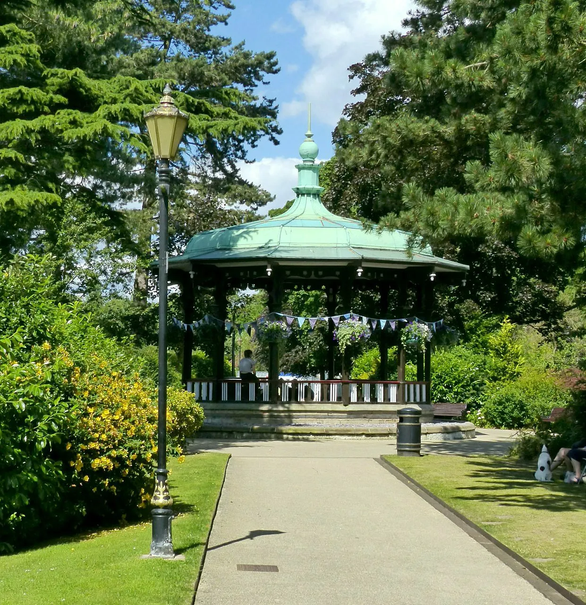

Remerciements
With thanks
No restaurant is an island, even one on the top floor of a mill. We would like to thank the people who make Belper the town it is.
Belper Town Council
To Belper Town Council
Thank you, sincerely, for everything you do for this town.
Belper is a lovely place to live, and that does not happen by accident. Sixteen councillors and a small team of office and outdoor staff work all year round to keep it that way, and we are grateful to every one of them.
We see your work every time we walk through town: the floral displays and planting, the markets and the farmers’ market, the Christmas lights and the carol service, Larks in the Park and the food festivals, the care of the Memorial Gardens, the Market Place and St John’s Chapel, the remembrance commemorations, the youth club and Youth Council, the litter picks and the volunteers, and the patient, unglamorous work of keeping the town tidy, safe, welcoming and, where necessary, within the law.
We are especially grateful for the council’s patience with our application for a licence to serve peregrine falcon eggs. The council responded promptly, courteously and, in the end, more than once, to explain that it has no power to grant such a licence, that no such licence exists, and that taking or possessing the egg of a wild peregrine falcon is a criminal offence under the Wildlife and Countryside Act 1981. We have had the reply framed.
Thank you for looking after Belper’s heritage, and for looking after its potatoes.

With particular thanks
Jonathan Davies
For his excellent work around town, and for the time, care and energy he gives to the private company that owns the mill, by asking the public to help them make it nice.
It is noticed, and it is appreciated. Thank you.
Support Belper
Find out what’s on, report a problem or get involved through the town council.
Visit Belper Town Council (external website)The peregrine falcons on the East Mill, and their eggs, are protected by law. If you see anyone disturbing the nest, please report it to Derbyshire Constabulary on 101, or 999 if a crime is in progress.